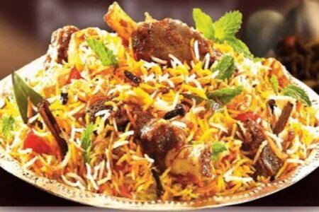
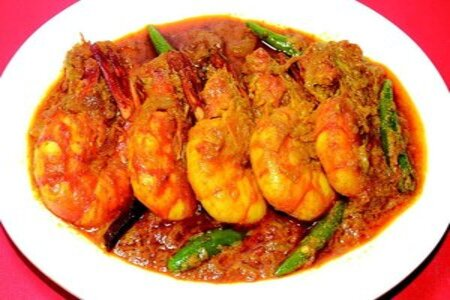
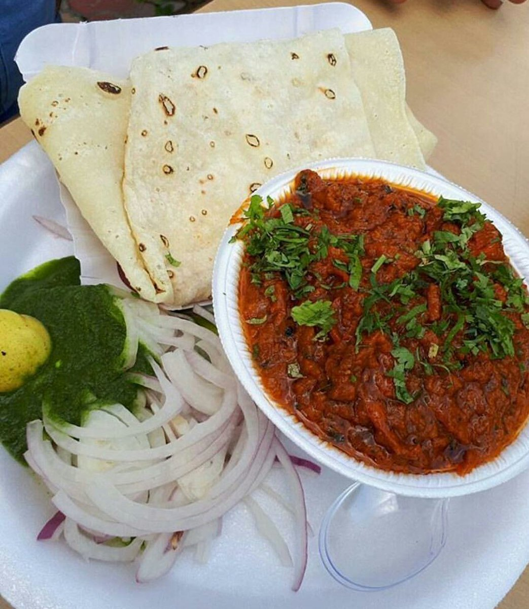

Kacchi
Kacchi Mutton Biryani is a delicious rice dish where tender goat or lamb meat pieces are marinated with
lots of fried onions, whole spices, fresh herbs and yoghurt. This marinated meat sits on the bottom of
the pot topped with half-cooked rice which is drizzled with saffron-infused water and more fried onions
and fresh mint leaves. Sealed and slow-cooked in an oven or on stove-top to a delicious aromatic
finger-licking biryani that you may serve with some kachumber, salad, and if you are like us, more
pappadoms

Chingri curry
This Chingri Malaikari is a favorite dish in our home and also from the number of hits that recipe gets
it is clear that it is also a favorite
among my readers. Now as it happens, in the recent years I got lazy with the dish, and though I made it
often, I did it with headless shrimp which involved zero cleaning. Until that is, a friend made the
recipe recently and couldn't get enough of it. She had taken the pains to use prawns with head on and
reminded me how I had said in my blog post that the "ghilu" adds a fourth dimension to the dish!!!

Rumali Roti
Rumali roti recipe with step by step pics. Rumali roti is one of the unleavened Indian breads that is
made traditionally in the Awadhi, Mughlai and Hyderabadi cuisine. Rumali roti is also one of the popular
breads that is served in Indian restaurants. These thin soft rotis are thin and can be folded like a
handkerchief. Hence the name rumali or roomali roti. The word ‘rumal’ means handkerchief in hindi
language